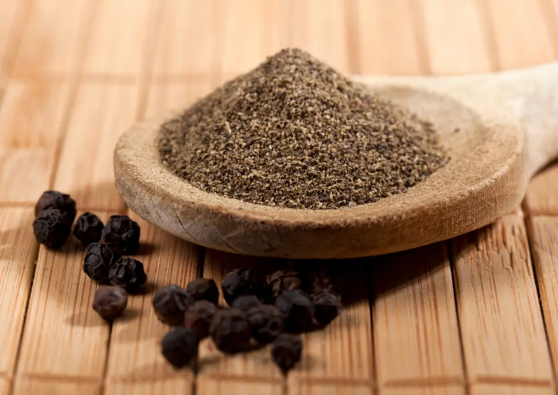

Ceylon Black Pepper
Premium Ceylon Black Pepper - Whole & Ground
Discover the bold, earthy flavor of Ceylon Black Pepper — a premium spice sourced from the fertile highlands of Sri Lanka. Renowned for its exceptionally high piperine content (5–8%), our peppercorns deliver unmatched heat, depth, and aroma compared to regular varieties. Whether used whole or ground, this spice elevates every dish with its rich, complex profile.
Key Product Highlights
- Origin: Kandy, Sri Lanka (Single-origin, traceable)
- Processing: Naturally sun-dried and hand-sorted
- Health Benefits: Enhances digestion, metabolism, and nutrient absorption
- Applications: Culinary, herbal medicine, skincare scrubs, and essential oil infusions

Product Specifications
| Specification | Details |
|---|---|
| Scientific Name | Piper nigrum |
| Origin | Kandy, Sri Lanka |
| Form | Whole Peppercorns / Ground |
| Piperine Content | 5–8% (High Grade) |
| Moisture | <12% |
| Color | Jet Black, Mature Harvest |
| Packaging | 100g | 500g | 1kg resealable bags |
| Shelf Life | 24 months (whole), 12 months (ground) |
How to Use Ceylon Black Pepper
Culinary Uses
Freshly grind whole Ceylon Black Pepper to enhance the flavor of savory dishes such as roasted meats, creamy soups, grilled vegetables, marinades, stir-fries, and salad dressings. Its high piperine content delivers a sharp, complex heat and deep aroma that elevates both everyday meals and gourmet recipes. Ideal for chefs and spice connoisseurs who demand purity and intensity.
Ayurvedic & Medicinal Use
In traditional Ayurvedic medicine, black pepper is prized as a natural digestive aid and detoxifier. Combine with turmeric and honey in warm water to create a powerful immunity-boosting tonic. It is also used in herbal teas to relieve congestion, improve circulation, and enhance the bioavailability of nutrients and herbs due to its piperine content.
Proper Storage
Store whole or ground black pepper in airtight containers away from direct sunlight, moisture, and heat sources. For best shelf life and maximum potency, use dark glass jars or resealable pouches. Proper storage preserves its essential oils, aroma, and spicy flavor for up to 2 years (whole) and 1 year (ground).
Bring the world’s boldest black pepper to your kitchen or store shelves.
Frequently Asked Questions
Why is Ceylon Black Pepper superior to other varieties?
Ceylon Black Pepper contains higher piperine levels and stronger essential oils, resulting in deeper flavor and enhanced health benefits.
Do you offer bulk orders or custom packaging?
Yes, we offer wholesale pricing and private label options for bulk orders starting at 10kg. Reach out for a custom quote.
Is your black pepper certified organic?
Absolutely. Our pepper is certified organic by both USDA and EU standards, ensuring clean, chemical-free spice production.
Can I use this pepper for medicinal purposes?
Yes. In Ayurveda and herbal medicine, black pepper is valued for its ability to stimulate digestion, improve circulation, and support detoxification.